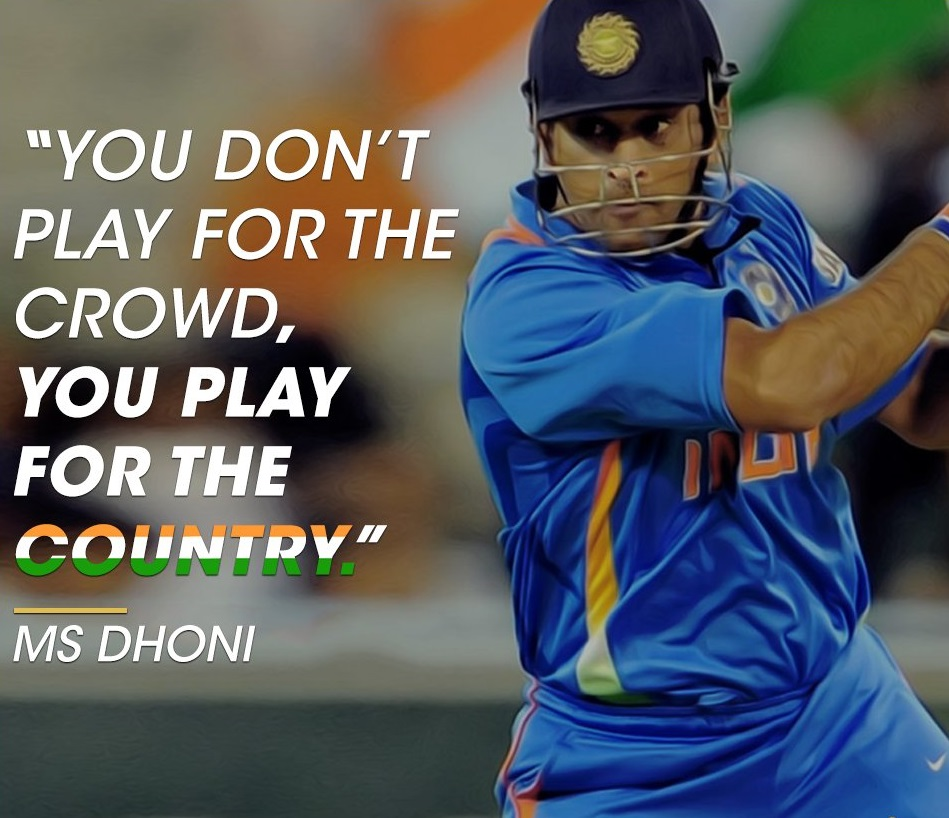

An Indian Cricketer
MS Dhoni first ODI century (123-ball 148-runs) came against Pakistan on April 5, 2005 at Visakhapatnam.
Dhoni was born in Ranchi, Bihar (now in Jharkhand) and hails from a Hindu Rajput family to parents from Uttarakhand. He is the youngest of three children of Pan Singh and Devaki Devi. His paternal village Lwali, is in Jainti Tehsil, Lamgara block of the Almora District of Uttarakhand. His parents moved from Uttarakhand to Ranchi, Jharkhand where his father worked as a pump operator in junior management position in MECON Colony situated in Doranda area in Ranchi. Unlike Dhoni, his uncle and cousins spell their surname "Dhauni".
Previously Dhoni was the goalkeeper for his DAV Jawahar Vidya Mandir school's football team, but after seeing his goalkeeping skills, coach Keshav Ranjan Banerjee, one who inspired Dhoni to be a cricketer, picked him to play cricket for his school team. His exceptional wicketkeeping skills allowed him to become the regular wicketkeeper at the Commando Cricket Club (1995–1998). Based on his performance at club cricket, he was picked for the 1997/98 season Vinoo Mankad Trophy Under-16 Championship, where he performed well.
"From 2001 to 2003, Dhoni worked as a Travelling Ticket Examiner (TTE) at Kharagpur railway station under South Eastern Railway in Midnapore (W), a district in West Bengal."
Dhoni's entry into competitive cricket was facilitated by Deval Sahay, a prominent figure in the Bihar Cricket Association. He joined the Central Coal Fields Limited (CCL) team in 1998 and quickly made an impact by excelling in his batting position. Dhoni's outstanding performance for CCL led to his selection in the Bihar junior team, followed by the senior Bihar Ranji Team within a year. In the 1998–99 Cooch Behar Trophy, Dhoni represented the U-19 Bihar team and scored 176 runs in 5 matches. Despite a strong performance, Bihar finished fourth in the group. Dhoni made his debut in the Ranji Trophy for Bihar in the 1999–2000 season at the age of eighteen. He marked his debut with an impressive half-century against the Assam cricket team. Dhoni's first-class century came in the 2000/01 season, solidifying his position in the Bihar team. In the 2002–03 season, Dhoni's batting style and lower-order contributions began gaining recognition. Dhoni's inclusion in the East Zone squad for the Duleep Trophy finals showcased his emerging talent. Dhoni's talent was spotted through the BCCI's talent-spotting initiative, TRDW, by Prakash Poddar, former Bengal captain. Dhoni's exceptional performances in the 2003/04 season led to his selection in the India A squad for tours of Zimbabwe and Kenya. Notable performances include a standout wicket-keeping effort with 7 catches and 4 stumpings against Zimbabwe XI. Dhoni's instrumental role in helping India A chase down a target of 223 against Pakistan A demonstrated his prowess in pressure situations. Dhoni's consistent and outstanding performances caught the attention of senior players like Sourav Ganguly and Ravi Shastri.
He debuted in first class and List A Cricket in the season of 1999–2000. In India's domestic cricket Dhoni played for the two state teams that is Bihar and Jharkhand cricket team. He also played for India A, Air India Blue, Indian Board President's XI, Rajasthan Cricket Association President's XI, East Zone, Rest of India, East zone under 19, Chennai Super Kings, Rising Pune Supergiant teams. In BCCI Corporate trophy he played for Air India airlines' "Air India team" until his resignation from the company in 2013. In 2003-04 Vijay Hazare trophy, he scored a century against Assam. On 8 February 2005 Dhoni played for India seniors in Challenger trophy, where he scored 102 nout out against India B. In 2009, BCCI Corporate trophy, Dhoni scored 106 runs while playing for Air India Blue team against 'India Revenue team'. In the inning he hit 7 sixes and 7 fours at Chandigarh. Jharkhand State Cricket Association (JSCA) appointed him captain of the Jharkhand team in February 2017 for the 2017-18 Vijay Hazare trophy. On 25 February 2017, he scored his first ever List-A (One day) century playing for Jharkhand; against Chhattisgarh cricket team he scored 107 runs. He lead the team to the quater final and scored 70 (108) not out in QF but Jharkhand lost against Delhi due to batting collapse.
He married Sakshi Singh Rawat on 4 July 2010. The wedding took place in Dehradun, Uttarakhand, one day after the couple got engaged. Dhoni and his wife have one daughter, Zeeva Dhoni. He lives in his farmhouse outside Ranchi along with his mother and father, his old house is situated in the city. He is ardent pet lover thus have many Dogs as pet inside the farmhouse. Dhoni likes to drive automobiles, he has different kind of bikes and cars in his collection. He has purchased a house in Pune, Maharashtra. Dhoni is an enthusiast of the Indian Army. While spending a day with the parachute regiment in Ranchi, Dhoni said, I wanted to become a soldier not a cricketer, "Since childhood I wanted to join the Army. Seeing the soldiers, I thought that one day I'll be the same". In 2011, he was bestowed with honorary rank of a Lieutenant Colonel in the Territorial Army's 106 Infantry Battalion. In August 2019, he did 15 day cource with India's army, during which he was given lessons of army petroling, ammunition training. He visited Anantnag, Uri during his stint in Jammu and Kashmir and served. He holds the post of vice-president marketing in India Cements Ltd. The company is owned by former BCCI president and IPL franchise Chennai Super Kings' owner N. Srinivasan.
Along with Sahara India Pariwar, Dhoni is a co-owner of Ranchi-based hockey club Ranchi Rays, a franchise of the Hockey India League. Dhoni is also a co-owner, along with Abhishek Bachchan and Vita Dani, of Chennai-based football club Chennaiyin FC, a franchise of the Indian Super League. Dhoni's interest in bikes is often discussed in media.
In 2012, he along with actor Dino Morea launched a merchandising company called Cool Maal. In February 2016, Dhoni launched lifestyle brand SEVEN. Dhoni owns the footwear side of the brand and is also the brand ambassador of SEVEN. In 2019, Dhoni invested in CARS24 and simultaneously became brand ambassador of the company. On 11 October 2022, at an event in Bengaluru, MS Dhoni was unveiled as the newest member of a startup. He has invested in Shaka Harry, a plant-based protein company.
In 2019, Dhoni Entertainment entered into a long-term business agreement with Banijay Asia to produce content in various genres. The first show developed was a documentary web series, titled Roar of The Lion, about the comeback of the Chennai Super Kings to lift the 2018 Indian Premier League starring MS Dhoni in the lead role. The web series is the biggest ever release through the platform of Hotstar Specials and started its online streaming from 20 March 2019. The romantic drama LGM, starring Harish Kalyan and Ivana, was released on 28 July 2023, and received mixed reviews from critics.
Dhoni holds an honorary rank of Lieutenant Colonel in the Parachute Regiment of the Indian Territorial Army (106 Para TA battalion). The honorary rank was presented to him by the Indian Army in 2011 for his service to the nation as a cricketer. After completing five parachute training jumps from Indian Army aircraft in the Agra training camp, he became a qualified paratrooper in 2015. In August 2019 he completed a two-week stint with the Territorial Army in Jammu and Kashmir.
A movie was made based on Dhoni's life, from his childhood to the 2011 Cricket World Cup, titled M.S. Dhoni: The Untold Story, with Sushant Singh Rajput in the titular role was released on 29 September 2016 with critical and commercial success. He was in the Disney+ Hotstar 2019 docudrama Roar of the Lion (web series), This five-episode docudrama tried to unravel the darkest phase of MS Dhoni's cricketing career, involving the ban on Chennai Super Kings due to the illegal betting activities by the team's main official, Gurunath Meiyappan.
-M S Dhoni